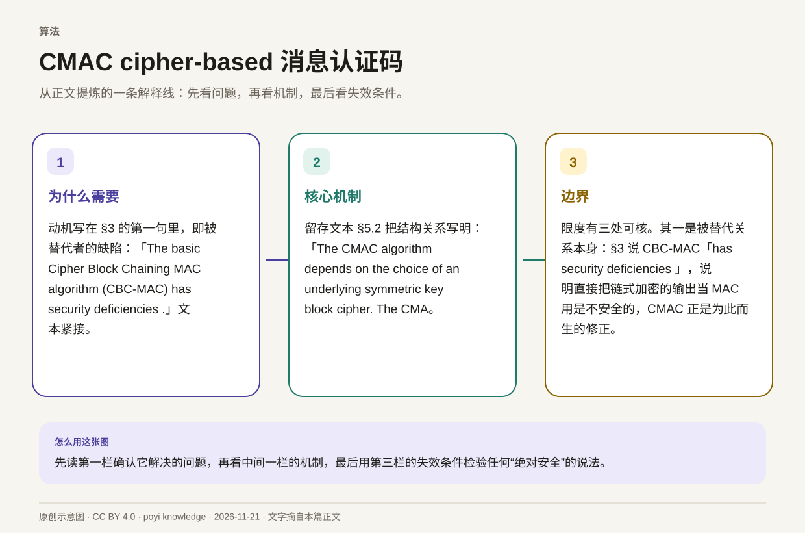
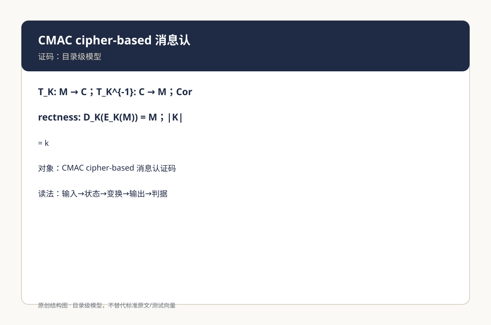

原理与机制
算法：CMAC 分组密码 MAC（CMAC）。留存文本 §5.2 把结构关系写明：「The CMAC algorithm depends on the choice of an underlying symmetric key block cipher.The CMAC algorithm is thus a mode of operation (a mode, for short) of the block cipher.The CMAC key is the block cipher key (the key, for short).」即 CMAC 不自带分组密码，它选定一个分组密码并把该密码的密钥直接当作 MAC 密钥。§4.1 的 MAC 定义给出产出物的性质：「A bit string of fixed length, computed by a MAC generation algorithm, that is used to establish the authenticity and, hence, the integrity of a message.」

为什么重要
动机写在 §3 的第一句里，即被替代者的缺陷：「The basic Cipher Block Chaining MAC algorithm (CBC-MAC) has security deficiencies [9].」文本紧接着说明 CMAC 的核心是 Black 与 Rogaway 提出并分析过的 XCBC 变体。换言之，CMAC 的存在理由不是再加一种 MAC，而是在保留分组密码实现的前提下修补 CBC-MAC 的已知缺陷。
应用与实例
用法上的硬约束写在 §5.5：「The length of T, denoted Tlen, is a parameter that shall be fixed for all invocations of CMAC with the given key.」也即截断长度是同一密钥下的固定参数，不能逐条消息临时改变；§5.5 同时把取值要求交给附录规定。因此协议里以同一密钥 + 固定截断长度的方式部署 CMAC，而不是在同一密钥下混用多种标签长度。

边界与攻击面
限度有三处可核。其一是被替代关系本身：§3 说 CBC-MAC「has security deficiencies [9]」，说明直接把链式加密的输出当 MAC 用是不安全的，CMAC 正是为此而生的修正。其二是依赖面：§5.2「The CMAC algorithm depends on the choice of an underlying symmetric key block cipher」，底层分组密码一旦被攻破，CMAC 的安全性随之失效。其三由 §5.5 的反面给出：Tlen 在同一密钥下必须固定，混用长度即偏离文本规定。
历史与背景
版本事实由文本自己给出：§1 写明「This publication is the second Part in a series of Recommendations regarding modes of operation of symmetric key block ciphers.」题头行则是「Recommendation for Block Cipher Modes of Operation: The CMAC Mode for Authentication」，即 SP 800-38B 是分组密码模式系列的第二份，专讲认证；本留存件的扉页日期为 2005 年 5 月。
技术参数与复算边界
该条目的形式模型是 (T=\mathrm{MAC}_K(M),\quad \Pr[\mathrm{Forge}]\le\varepsilon(\lambda))。输入：输入：CMAC 分组密码 MAC的公开参数、密钥/随机数与消息；变量说明：K 共享密钥，M 消息，T 认证标签。 预期输出：按 CMAC 分组密码 MAC 的规范执行后得到可验证的输出或可比较的优势界。 复算必须给出输入、步骤、输出和单位；示例只演示流程，不替代标准测试向量。
复杂度由密钥长度、分组/状态规模、轮数、随机数质量和敌手模型共同决定；参数越界、版本差异与实现侧信道都可能使公式结论失效。已登记限制：该条目只给出形式模型与可复算步骤，不声称已完成生产实现、侧信道认证或第三方安全评估。
逐步示例与核验
形式模型与复算步骤
[T=\mathrm{MAC}_K(M),\quad \Pr[\mathrm{Forge}]\le\varepsilon(\lambda)]
CMAC 分组密码 MAC的公开参数、密钥/随机数与消息；变量说明：K 共享密钥，M 消息，T 认证标签。1.密钥派生或分组处理。2.按构造压缩消息与密钥。3.输出固定长度标签并验证。边界：公式只覆盖已登记的参数与假设；参数取值、标准版本和实现细节仍以来源为准。
参考出处
- Wikipedia search entry for CMAC 分组密码 MAC. https://zh.wikipedia.org/w/index.php?search=CMAC%20%E5%88%86%E7%BB%84%E5%AF%86%E7%A0%81%20MAC
- Handbook of Applied Cryptography (Menezes, van Oorschot, Vanstone). https://www.cacr.math.uwaterloo.ca/hac/